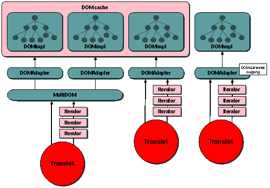

|
| | |
The <xsl:strip-space> and <xsl:preserve-space>
elements are used to control the way whitespace nodes in the source XML
document are handled. These elements have no impact on whitespace in the XSLT
stylesheet. Both elements can occur only as top-level elements, possible more
than once, and the elements are always empty
Both elements take one attribute "elements" which contains a
whitespace separated list of named nodes which should be or preserved
stripped from the source document. These names can be on one of these three
formats (NameTest format):
-
All whitespace nodes:
elements="*"
-
All whitespace nodes with a namespace:
elements="<namespace>:*"
-
Specific whitespace nodes:
elements="<qname>"
|
 | | | | Determining which nodes to strip | | | | |
| | |
A text node is never stripped unless it contains only whitespace
characters (Unicode characters 0x09, 0x0A, 0x0D and 0x20). Stripping a text
node means that the node disappears from the DOM; so that it is never
included in the output and that it is ignored by all functions such as
count(). A text node is preserved if any of the following apply:
-
the element name of the parent of the text node is in the set of
elements listed in
<xsl:preserve-space>
-
the text node contains at least one non-whitespace character
-
an ancenstor of the whitespace text node has an attribute of
xsl:space="preserve", and no close ancestor has and
attribute of xsl:space="default".
Otherwise, the text node is stripped. Initially the set of
whitespace-preserving element names contains all element names, so the
default behaviour is to preserve all whitespace text nodes.
This seems simple enough, but resolving conflicts between matching
<xsl:strip-space> and <xsl:preserve-space>
elements requires a lot of thought. Our first consideration is import
precedence; the match with the highest import precedence is always chosen.
Import precedence is determined by the order in which the compared elements
are visited. (In this case those elements are the top-level
<xsl:strip-space> and <xsl:preserve-space>
elements.) This example is taken from the XSLT recommendation:
- stylesheet A imports stylesheets B and C in that order;
- stylesheet B imports stylesheet D;
- stylesheet C imports stylesheet E.
Then the order of import precedence (lowest first) is D, B, E, C, A.
Our next consideration is the priority of NameTests (XPath spec):
-
elements="<qname>" has priority 0
-
elements="<namespace>:*" has priority -0.25
-
elements="*" has priority -0.5
It is considered an error if the desicion is still ambiguous after this,
and it is up to the implementors to decide what the apropriate action is.
With all this complexity, the normal usage for these elements is quite
smiple; either preserve all whitespace nodes but one type:
| | | | <xsl:strip-space elements="foo"/> | | | | |
or strip all whitespace nodes but one type:
| | | |
<xsl:strip-space elements="*"/>
<xsl:preserve-space elements="foo"/> | | | | |
|
| | |
The ultimate goal of our design would be to totally screen all stripped
nodes from the translet; to either physically remove them from the DOM or to
make it appear as if they are not there. The first approach will cause
problems in cases where multiple translets access the same DOM. In the future
we wish to let translets run within servlets / JSPs with a common DOM cache.
This DOM cache will keep copies of DOMs in memory to prevent the same XML
file from being downloaded and parsed several times. This is a scenarios we
might see:

Figure 1: Multiple translets accessing a common pool of DOMs
The three translets running on this host access a common pool of 4 DOMs.
The DOMs are accessed through a common DOM interface. Translets accessing
a single DOM will have a DOMAdapter and a single DOMImpl object behind this
interface, while translets accessing several DOMs will be given a MultiDOM
and a set of DOMImpl objects.
The translet to the left may want to strip some nodes from the shared DOM
in the cache, while the other translets may want to preserve all whitespace
nodes. Our initial thought then is to keep the DOM as it is and somehow
screen the left-hand translet of all the whitespace nodes it does not want to
process. There are a few ways in which we can accomplish this:
-
The translet can, prior to starting to traverse the DOM, send a reference
to the tables containing information on which nodes we want stripped to
the DOM interface. The DOM interface is then responsible for hiding all
stripped whitespace nodes from the iterators and the translet. A problem
with this approach is that we want to omit the DOM interface layer if
the translet is only accessing a single DOM. The DOM interface layer will
only be instanciated by the translet if the stylesheet contained a call
to the
document() function.
-
The translet can provide its iterators with information on which nodes it
does not want to see. The translet is still shielded from unwanted
whitespace nodes, but it has the hassle of passing extra information over
to most iterators it ever instanciates. Note that all iterators do not
need be aware of whitepspace nodes in this case. If you have a look at
the figure again you will see that only the first level iterator (that is
the one closest to the DOM or DOM interface) will have to strip off
whitespace nodes. But, there may be several iterators that operate
directly on the DOM ( invoked by code handling XSL functions such as
count()) and every single one of those will need to be told
which whitespace nodes the translet does not want to see.
-
The third approach will take advantage of the fact that not all
translets will want to strip whitespace nodes. The most effective way of
removing unwanted whitespace nodes is to do it once and for all, before
the actual traversal of the DOM starts. This can be done by making a
clone of the DOM with exlusive-access rights for this translet only. We
still gain performance from the cache because we do not have to pay the
cost of the delay caused by downloading and parsing the XML source file.
The cost we have to pay is the time needed for the actual cloning and the
extra memory we use.
Normally one would imagine the translet (or the wrapper class that
invokes the translet) calls the DOM cache with just an URL and receives
a reference to an instanciated DOM. The cache will either have built
this DOM on-demand or just passed back a reference to an existing tree.
In this case the DOM would need an extra call that a translet would use
to clone a DOM, passing the existing DOM reference to the cache and
recieving a new reference to the cloned DOM. The translet can then do
whatever it wants with this DOM (the cache need not even keep a reference
to this tree).
We are lucky enough to be able to combine the first two approaches. All
iterators that directly access the DOM (axis iterators) are instanciated by
calls to the DOM interface layer (the DOM class). The actual iterators are
created in the DOM implementation layer (the DOMImpl class). So, we can pass
references to the preserve/strip whitespace tables to the DOM, and the DOM
will make sure that all axis iterators return node sets with respect to these
tables.
|
|
|